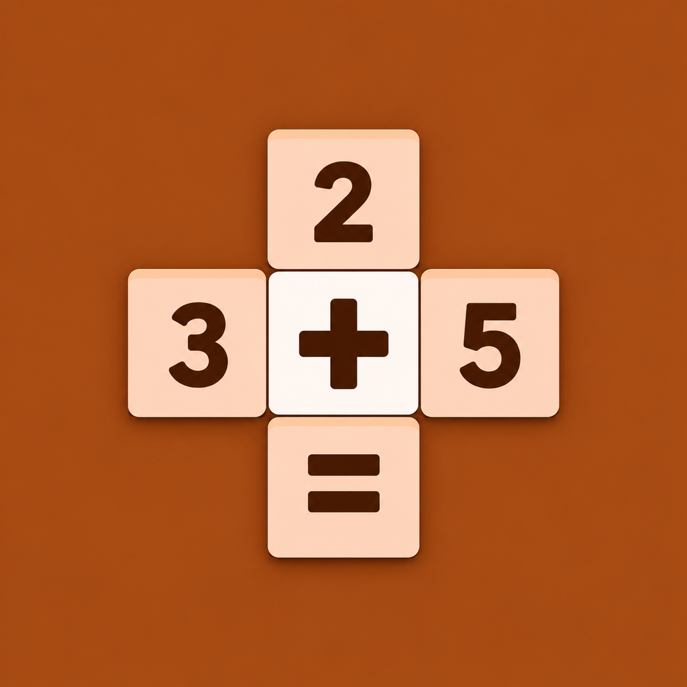

CrossMath Game Rules
For the current browser version of CrossMath.
Arithmetic rules
Addition and multiplication use ordinary integer arithmetic. Subtraction must produce a nonnegative result. Division must have a nonzero divisor and an exact integer result. Each equation has one operation, so there is no mixed-operation precedence to resolve.
Bank and completion
Use only the supplied number tiles. Any arrangement that uses the bank and satisfies every equation wins; you do not have to match a hidden arrangement.
Puzzle layouts
The web version uses the Flutter app’s four bundled equation layouts. New game varies which number positions are editable and rebuilds the bank. The underlying arithmetic layout for each difficulty is reused.
Difficulty
Choose Easy, Medium, Hard, or Expert from the difficulty menu. Changing the level immediately starts a new puzzle and replaces your progress.
Check and hints
Check tells you whether your current choices can still lead to a solution. Each game has three hints. A successful hint reveals one choice compatible with your current entries. If your choices block all solutions, undo or clear a choice first; no hint is spent.
Undo, pause, and restart
Undo reverses a board move, including a revealed hint, but does not refund its hint allowance. Pause hides the board and stops the timer. Restart replays the same puzzle with its initial state, three hints, and a reset timer. New game starts another puzzle at the selected difficulty. There are no points or lives in this web version.
Completion and progress
A completed puzzle stops the timer and blocks further moves. Restart or New game plays again. Your progress is held only in memory; reloading or navigating away discards it. Open help links in a new tab to keep your puzzle. Switching tabs does not automatically pause it.